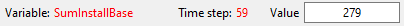
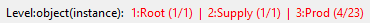
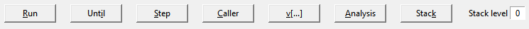
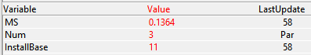
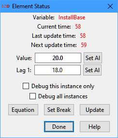
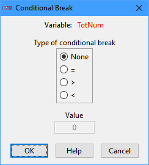

LSD Debugger
|
|
c. Observe and edit element values 4. Menu Exit 5. Menu Find 6. Menu Help |

The LSD Debugger can help finding errors in the Equations code and for understanding the actual sequence of computations executed in a simulation run, as well the associated numerical values at each time step.
The information below is also applicable for the Data Browser window, when applicable.
The debugging process
The first step to start the debugging procedure is to set one or more Variables for debugging before a simulation run (see here how). Next, still before running the simulation, use the option Run>Settings to define the time step the debugging will start (see here), or, alternatively, during the simulation run, press the button Debug in the LSD Log window to define when to start tracking the selected Variables. Last, start the simulation run using menu Run>Run.
After finishing the computation of any of the marked Variables, the simulation is interrupted, the Debugger window is opened, and the contents of the Object instance containing the computed Variable is presented. At this point, the user can browse through the model's Objects using the browsing buttons. Analyzing the values of the Variables and Parameters it is possible to check if the value returned by the Equation is the expected one. The user can also refer to the values of the temporary variables v[…] just computed by the current Equation’s code.
The modeler can still control the Variables that started to be computed but could not be completed yet (at the moment the current Variable was computed). The current list of Variables under computation is available in the LSD stack. The user can modify the values of the Variables and Parameters by double clicking on their names in the Debugger window. Finally, the user can continue the simulation (or abort it) with different options using the simulation control buttons.
Two suggestions for serious problems where the LSD Debugger cannot help: (1) focus on the identification of the Variable(s) that caused the problem (see here on how to find the Variable causing a complicate crash), and (2) learn how to use the GDB/LLDB debuggers (see here for details), two more advanced debugging tools (LLDB is for macOS only).
Activating debug mode
The Debugger starts when two conditions are simultaneously met:
· The simulation starts debug mode (because of the simulation settings or the user pressed the Debug button)
· A Variable marked for debugging finish computing
To enter debug mode users can set a positive value in the appropriate entry in the simulation settings (menu Run>Simulation Settings) before launching a simulation run. New values for the time step when activating the debug mode can also be set using the Until button. During a simulation run, debug mode can be also activated clicking on the Debug button in Log window. When the user clicks on button Run, to continue an interrupted simulation, or exits the Debugger, to abort the simulation, LSD leaves debug mode.
A Variable is marked for debugging before a simulation run by using the main LSD Browser to change its properties. In this case, the debug setting is set for all the instances of the Variable. The setting is also saved to the configuration file. Users can also set a Variable to be debugged from within the Debugger (see here how). In this situation, the user has the option to selected only a specific instance of the Variable to interrupt the simulation (other instances of the same Variable will not trigger the Debugger). Finally, the Debugger is also activated when a conditional break is met, as explained below.
In any case, irrespective to the above conditions, the Debugger can also be automatically activated by LSD when a serious error forces it to abort the simulation.
The Debugger/Data Browser window
The Debugger and the Data Browser windows show the content of a single instance of an Object, that is, the Object whose Variable has been just computed or selected. The window is composed by:
- A title row (not available in the Data Browser):

- The type and instance number of the shown Object:

- The simulation control buttons (not available in the Data Browser):

- The content of the shown Object:

Title row
The row shows the name of the Variable which interrupted the simulation run, the current time step, and the just computed Variable value. This value can be modified by the user before the simulation continues.
This line is not present in the Data Browser window.
Object name, instance number and list of ancestors
The row presents the name of the Object instance containing the Variable, the names and indexes of this Object’s ancestors in the model structure. The indexes list pairs report the instance number (position in the group) and the total number of instances of the container Object in the current branch of the model.
Clicking on any part of the list of Object names allows the user to modify the number instances of the current Object type. It is possible to change this number both before running a simulation (in Data Browser) and during a simulation (in Debugger). See here for details on how to modify the number of Object instances in the model.
The Debugger and the Data Browser windows work similarly to the LSD main Browser in showing the Object content, but consider one single instance of an Object instead of an Object type as in the Browser.
Model browsing buttons
The Debugger and the Data Browser windows start by showing the content of the Object whose Variable caused the simulation run to stop (Debugger) or was selected by the user (Data Browser). Users can then move from the current Object to show any other Object. A set of buttons is used to browse through the model structure. The user can explore each individual instance of each Object.
· Up (shortcut: U): move to the parent of the current Object. No action if the Root (the upmost Object) is the current one.
· Down (shortcut: D): move to the first instance of the first Object descending from the current one. No action if the Object does not have descendants.
· Previous (shortcut: P): move to the (brother) Object instance preceding the current one, if any, or to the Object type preceding the current Object, if exists. Note that the “previous” instance must be of the same Object type or under the same parent. No action if there is no preceding Object.
· Next (shortcut: N): move to the (brother) Object instance following the current one, if any, or to the Object type following the current Object, if exists. Note that the “next” instance must be of the same Object type or under the same parent. No action if there is no following Object.
· Next Type (shortcut: T): move to the first instance of the (brother) Object type following the current Object type, under the same parent. No action if there is no following Object type.
· Last (shortcut: L): move to the last instance of the current Object type.
· Find (shortcut: F): find a Variable or Parameter given its name in the current (shown) Object. See details below. If the searched element is not in the current Object or a specific numerical value for a multi-instanced element is required, please check the menu option Find>Find Object Containing… (shortcut: Ctrl+F).
· Hooks (shortcut: H): show a list of available hook pointers of the current Object and move the Debugger window to the Object pointed by the one selected by the user. If the Object has no dynamic pointer allocated and the static pointer is set and valid, the Debugger window move to it immediately. Only hook pointers pointing to a valid Object are presented for selection. This button is disabled if no hook pointer is set to the current Object.
· Network (shortcut: W): presents the LSD network links connecting the current Object to its neighbors in the network, if any. This button is disabled if the Object is not configured as a network node. Clicking this button while the network links window is open closes it.
Simulation control buttons
These buttons control the flow of the simulation run during the debugging session. They are not present in the Data Browser window.
· Run (shortcuts: R, F5): continues the simulation closing the Debugger window and leaving debug mode. Therefore, the simulation is no longer interrupted until a conditional break is met, or buttons Debug, Pause or Stop are pressed in the Log window.
· Until (shortcuts: I, F7): ask for a time step and normally continue the simulation until there, when debug mode is reactivated, causing for the simulation to be interrupted at the first Variable to be debugged.
· Step (shortcuts: S, F8): continues the simulation, remaining in debug mode, until another Variable to be debugged is updated, either in the same or in a subsequent time step.
· Caller (shortcuts: C, F6): move the Debugger window to the Object containing the Variable which requested the computation of the current Variable. If the Variable computation was not triggered by any Equation (LSD demanded its update), this button does nothing.
· v[…] (shortcut: V): show the set of intermediate values used in the Variable’s Equation. These temporary values may be used to re-construct the internal computation of the Variable just executed. Please note that only the temporary variables effectively used in the Equation have meaningful values, all others show useless data. These values may not be reliable in case the Debugger was activated because of a conditional break. Clicking this button while the intermediate values window is open closes it.
· Analysis (shortcut: A): open the Analysis of Result module, permitting users to analyze every saved time series up to the previous time step.
· Stack (shortcut: K): shows in the Log window the state of the LSD simulation stack, presenting which Variables are currently under computation. That is, the set of Variables whose computation started but is still not completed because other Variables needed to be computed first. See the example on how to use this data.
· Stack level: define the maximum LSD simulation stack level in the computation log to be presented in the Log window during the debugging session. The default (0) disables showing the stack. Please note that this option significantly reduces the simulation speed, as it prints one line for each Variable being updated up to that level, in particular when deep stack levels are configured. More information is available below.
If the Debugger window is open while the simulation is paused (by pressing the button Pause in the Log window), some of the buttons above will not be shown.
Object content
In the Debugger and the Data Browser windows, a two-column list shows the Variables and Parameters contained in the Object shown. In each column, a line shows:
· Name of the Variable or Parameter.
· Current value (for Variables, it is the lastly computed value).
· Last update (not used for parameters): the simulation time step during which the Variable has most recently computed its Equation. Comparing the value of last update for a Variable with the current time it is possible to know whether the Variable will still be computed during the current step or if it has already been updated.
Clicking with the right button on the element name activates the Set All command. The Set All command recognizes the instance of the Object currently selected, and allows the change of a single branch in the model structure. This can be used before running a simulation or at any one time during a simulation run. The last update time of the Variables will not be affected by this change. See the Set All command for further details.
Observe and edit element values
Double-clicking on the element name allows the observation and editing of the value(s) of the element.

The Status window (above) shows one entry for each lagged value in case of lagged Variables or one single entry for non-lagged Variables and Parameters. The entries show the current values and the user can modify them. Clicking on the Set All buttons allows the change of all, or some, of the values for the same element contained in other Object instances in the model (see here for details). Beware that the changes ignore the actual time of last computation for each element.
The other elements of the window are:
· Debug / Debug all instances: marking one of the checkboxes sets the Variable to be debugged. That is, next time the Variable is computed the simulation will be interrupted. The user may request the Debugger to stop just for this specific instance or for any instance of the Variable.
· Equation: shows the code for the Variable’s Equation in a new window.
· Set Break: define conditional breaks for the simulation run, according to particular values of the Variable (see below).
· Update: forces the variable to be updated. It produces no result if the variable has been already updated in the current time step.
· Done: returns to the main Debugger window.
Set conditional breaks
Using conditional breaks Variables can be marked for interrupting the simulation run only if they have a specific value attributed to them. A conditional break can be set only during a debugging session, when the simulation was interrupted at least once by the computation of a Variable with the (unconditional) debug attribute set. After that, however, it is possible to add conditional debug breaks even for Variables not marked for debugging. The user can set conditional breaks in case the Variable’s result from its Equation is equal to, lesser than or greater than a given value. Conditional breaks last only during the current debugging session.
To set a conditional break, in the Debugger window double click on the name of the desired Variable and press the Set Break button in the Element Status dialog box.

On the Conditional Break dialog (above), the user first choses which condition should interrupt the simulation run and, if required, sets a numerical value associated to the selected condition. Four conditions are available: (1) None, to set a dynamic unconditional break, (2) “=”, to interrupt if the Variable computation result is exactly equal to the chosen value, (3) “>”, to interrupt if result is larger than the value, or (4) “<”, to break if result is less than the set value. Only one conditional break can be defined for each Variable. Several Variables can have assigned conditional breaks at once.
When a conditional break condition is satisfied for any Variable, the simulation is interrupted and the Object containing that Variable is shown in the Debugger window.
Menu Find
Search operations to find Variable, Parameter and Function elements and highlight them on the Object content part of the LSD Debugger window.
Find Element
Shortcuts: F or press button Find.
Search for a Variable, Parameter or Function in the current (shown) Object. After a successful search, the Debugger highlights this element and adjusts the window scroll position to make it visible, if necessary.
Note that the Find Element window is endowed with auto-completion: while you type, the entry box proposes the first element with the typed initial letters, if any.
Find Object Containing
Shortcut: Ctrl+F.
Search for a Variable, Parameter or Function in any existing Object in the model. If a numerical reference value is required, the user may select a narrower search condition based on it. After a successful search, the Debugger moves to show the Object containing the searched element and value condition, if any, highlights this element and adjusts the window scroll position to make it visible, if necessary. If more than one Object instance contains the requested Variable satisfying the given condition, the system shows the one closest to the current Object and instance.
Note that the Find Object Containing window is endowed with auto-completion: while you type, the entry box proposes the first element with the typed initial letters, if any.
Clear Highlighted
Shortcut: Delete.
Removes the highlighting from the last found element, if any.
Menu Exit
This menu has the single entry Quit and Resume Simulation. As a shortcut, the user may click on the X in the LSD Debugger title bar or press the key Esc.
If a simulation is running, executing Quit and Resume Simulation does not abort the simulation. If aborting the simulation is required, simply press Stop in the LSD Log window after resuming the simulation.
LSD simulation run details
In order to use the LSD Debugger it is crucial to understand how a simulation is run in LSD. When a simulation is started, the model loaded in LSD is passed to the simulation manager. When the manager starts, the time step is initialized to 1 and at each step it is increased by one unit.
The LSD simulation manager follows a simple cycle for each time step and for each Object in the model:
1. Take an Object with non-computed Variable(s)
2. Take one non-computed Variable from the current Object
3. Execute the associated Equation
4. If the Equation requests the updated (lag zero) value of any other Variable, and this has not been computed yet, execute its Equation
5. If there are any non-computed Variable in the current Object, go to 2
6. If there is any Object with non-computed Variable(s), go to 1
7. Increment the time step and go to 1
This cycle starts with the Root Object, and proceeds, recursively, for each of its descendant, their own descendants and so on. Note that the Equation for a Variable can be computed under three circumstances:
· The LSD simulation manager requests its value because it was not yet updated (except if the update flag is not set for the Object containing the Variable)
· Another Variable has requested its updated value
In the second case, the Equation that caused the Variable to be updated is interrupted until the other Equation is completed. That is, the first Equation's computation is placed “on the stack” and is resumed only when the second Equation is completed. Of course, the second Equation can itself trigger the computation of another Equations, and, therefore, it can be placed on the stack too (second level) while the Variables it requested are computed.
It is a common mistake to write Equations that create a dead-lock. As when, in the simplest case, you have two equations like:
X = F(Y) and Y = G(X)
Of course, it is necessary that either F(.) or G(.) use a lagged value, otherwise the set of two equations is not computable (a kind of “egg-and-chicken” problem). Similar errors are common even in mildly complex models, when a long chain of equations reciprocal computations can hinder the source of the error.
Model writers can make use of the stack log provided, on request, by LSD. At a significant cost to speed, when the value set for the stack log level is higher than zero, LSD profiles the simulation execution. The stack log level can be set either in the simulation settings, before starting a simulation run, or in the Debugger window, during a debugging session. When the profiling log is active, the simulation manager prints out in the Log window one line for each equation computed up to the selected stack level. That is,
· Stack level 1 means that the equation has been computed because of simulation manager request (end of cycle updating);
· Stack level 2 means that the equation has been computed as consequence of a request made by an equation computed at stack level 1;
· ...
· Stack level n means that the equation has been computed as consequence of a request made by an equation computed at stack level n - 1;
The profiler log issues one line per processed Equation, like this:
VarLabel (4) =3.14 t=18 msecs=1 stack=6 caller=ObjLabel trigger=VarTwo
It means that:
· Variable VarLabel has just being computed
· It is contained in the fourth instance of the container Object type
· The result of the Equation computation is 3.14
· It was computed in time step 18
· It was computed at stack level 6 (because requested by another Variable, which, in turn, was computed at stack 5)
· The Object containing the Variable which requested its value if of type ObjLabel (this field reports SYSTEM if the Variable was computed by the simulation manager)
· The Variable in whose equation it was requested is VarTwo (this field is not present if the Variable was computed by the simulation manager)
The profiler log provides the exact scheduling used by the simulation manager to compute the model. This information is frequently used along the data from the current stack status. For example, suppose you choose to control when the Equation for Variable ExpChoose is computed. You first set the Variable ExpChoose with the debug flag on (see here how). You also configure the simulation with the options for debugging from step 20 and profiling the stack up to level 5 (see here how). The simulation will run (rather slowly) printing a line for each Equation computed. When the Equation for ExpChoose finishes computing at time step 20, the Debugger will automatically interrupt the simulation. After that you press the button Stack in the Debugger, the Log window may show the following information:
DevLearn (10) =0.05 t=19 stack=1 caller=SYSTEM
ChUsed (10) =0 t=19 stack=1
caller=SYSTEM
MSNiche (10) =1 t=19 stack=2 caller=TGCh trigger=TechStats
TechStats (10) =1
t=19 stack=1 caller=SYSTEM
ResetNum (1) =0 t=20 stack=1 caller=SYSTEM
Learning (5) =0.0298 t=20 stack=2 caller=Agent trigger=Action
IssuerId (1) =5 t=20 stack=2 caller=Demand trigger=Action
ExpChoose (1) =1 t=20 stack=4 caller=Group trigger=SetARank
List of Variables currently under computation
Level Variable
Label
4 ExpChoose
3 SetARank
2 Choose
1 Action
0 LSD Simulation Manager
(the first-level variable
is computed by the simulation manager,
while possible other Variables are triggered by the lower level ones
because necessary for completing their computation)
Let's see how to interpret this data. Variable ResetNum is the first to be completed at time 20. Then we have two Variables computed because requested by the Equation for Action (Learning and IssuerId). Both are computed at stack 2 (indicating that Action is computed at stack 1, because requested by the simulation manager). Finally, we have our ExpChoose equation, which is completed at stack 4, because requested by SetARank, which must therefore have been computed at stack 3. The information about the stack status confirms our conclusion: ExpChoose is computed because requested by SetARank, which was triggered by Choose, which, in turn, was triggered by Action.